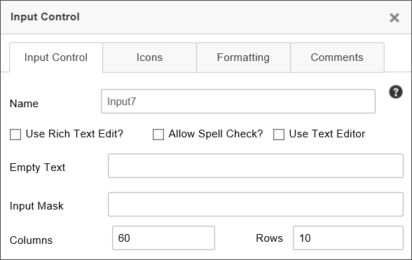
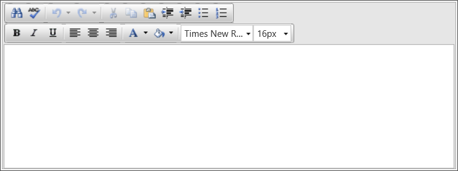
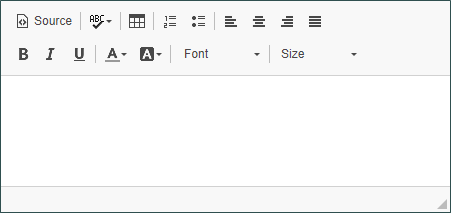
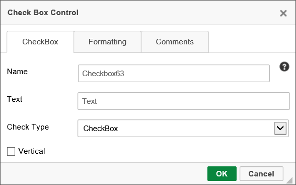
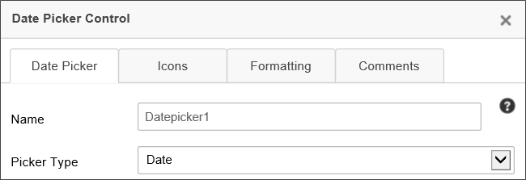
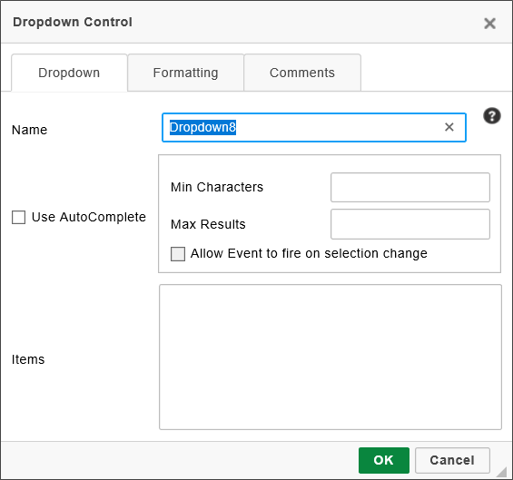
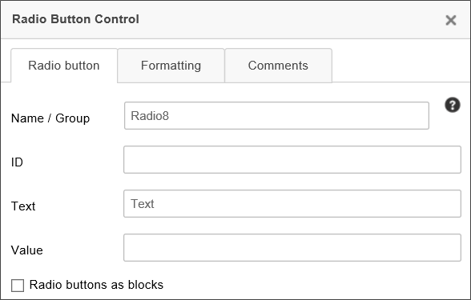

The first seven tool icons Form Controls toolbar displays the most commonly-used controls for the Online Form Designer.

Selecting this item places an Input box in the document where the cursor is located. The name of the Input control can be changed in the Properties dialog box.

Set the Name to the name of the field you want to use on the Form. The fields name and description can be changed in the Input Control tab of the properties, while the formatting can be changed in what we conveniently call the Formatting tab of the properties.
The input control's default display mode is plain text; however, by checking the Use Rich Text? check box, the field will display as a Rich Text field, and allow basic formatting via a simple rich text editor. Additionally, pasting formatted text will carry their formatting over into the Rich Text box, including HTML formatting. (any JavaScript in pasted HTML will be stripped.)

The Allow Spell Check property turns on the browser's integrated spell checking for the contents of the Input box.
The Use Text Editor property enables a more modern text editor than the legacy Rich Text editor.

The Empty Text property enables you to enter the text you'd like to display in the input control when it is empty. This is useful for displaying brief instructions for the field.
The Input Mask property enables you to specify an input mask that will appear to users when they fill out the form. Input masks can be constructed using the following syntax.
|
MASK CHARACTER |
DESCRIPTION |
|---|---|
#
|
Digit or space (optional). If this position is blank in the mask, it is rendered as a prompt character. |
L
|
Uppercase letter (required). Restricts input to the ASCII letters A-Z. |
l
|
Lowercase letter (required). Restricts input to the ASCII letters a-z. |
a
|
Accepts any character. If this position is blank in the mask, it is rendered as a prompt character. |
By way of example, you can, using the above mask characters, set up an input mask for a phone number, using the syntax:
(###) ###-####
At run-time, the user will see the input mask:
(___) ___-____
Input masks can't be used if the Rich Text checkbox is checked, and the Input Mask property will be disabled.
The Columns and Rows properties enable you to set the horizontal and vertical sizes, respectively, of the control.
For users of Process Director v4.5 and higher, input controls that implement numeric data types right-justify the text by default.
For users of v4.52 and higher, a custom variable, AutoMultilineTextBoxResize, enables automatic vertical resizing of Input controls as you type. This feature automatically resizes the text box as you type, to fit all of the text you type into the visible area of the text box, instead of using scroll bars to scroll through the text. If this variable is set to "true", you can set the CSS Class for the input control to "BPexpanding" to implement the auto-expand feature. If you want to create your own CSS class to control this auto expand behavior, set the AutoMultilineTextBoxResizeClass custom variable to your desired CSS class name.
Selecting this item places a Checkbox control in the document where the cursor is located.

The name and settings of the Checkbox can be modified by right clicking on the field and selecting the Properties menu item. Set the Name to the name of the field you want to use on the Form.

|
OPTION |
VISUAL REPRESENTATION |
|---|---|
| Checkbox |

|
| iOS |

|
| Light |

|
| Flat |

|
| Skewed |

|
| Flip |

|
Selecting this item inserts a form control that will display a Date Picker control where the cursor is located. The name and size of the input box can be modified by right clicking on the input field and selecting the Properties menu item.

When the date control is clicked on in the Form, a popup date picker is displayed making the selection of a date easy for the user. In the Properties dialog, you can configure whether the picker should be just a date picker, just a time picker, or a datetime picker.

When setting the value of a Date Picker control using the Picker Type of "Date" programmatically (for example, using a Custom Task), any time information included will be discarded. To retain the time information, you must set the Picker Type property to "Date/Time".
Selecting this menu item places a Dropdown control where the cursor is located.

In addition to the standard Name property, the following properties are configurable.
The Use Auto Complete property, when checked, transforms the Dropdown control from a standard, selectable dropdown to a type-ahead dropdown. When you check this property, two additional properties become enabled. The first of these is the Min Characters property, which enables you to specify the number of characters a user must type before the type-ahead dropdown returns matching items. The higher the number, the fewer queries that will be required to return items that match the text you've typed. The second associated property is the Max Results property, which specifies the maximum number of matching items that will be returned in the type-ahead dropdown. Again, this enables you to minimize the number if items each query returns. Additionally, if you want the field to be an event field, you must check the Allow event to fire on selection change property, in addition to setting the field as an event field on the Form Controls tab of the form definition.
 To enable Type-Ahead to display properly, the EnableFormThemes Custom Variable must be set to "false".
To enable Type-Ahead to display properly, the EnableFormThemes Custom Variable must be set to "false".
For Process Director v5.31 and higher, dropdown Controls that use the TypeAhead feature with a Business Value will invoke a dynamic evaluation of that Business Value if one of the parameters matches the configured Event Control.
You can fill the dropdown manually by typing list items in the Items property box, with one item for each row. When an item is selected in the dropdown list the text of the item will be stored in the form field on the server. If you choose to associate a value that is different than the text, it can be accomplished by adding a colon (“:”) followed by the desired value. For instance if you want the user to see "August" in the dropdown, but you want to save the month number, "8", in the database, add the following text to the Items property box:
August:8
The text to the Left of the colon will be displayed in the dropdown, while the text to the right of the colon will be saved as the value of the field in the database. Similarly, you can save a null value to the database using the colon followed by quotation marks, as demonstrated in the following example:
[Select One]:""
This method also enables you to set a dropdown as a required field, since the NULL value will automatically be considered by the system as having not been filled out., and will cause a validation error.
|
ITEM VALUE |
USER WILL SEE |
VALUE STORED IN DATABASE |
|---|---|---|
|
|
August |
August |
|
|
August |
8 |
[Select One]:""
|
[Select One] | NULL |
Instead of manually setting the list items for the dropdown using the Items property, you can assign a Dropdown object to provide the values for the dropdown control. In the Form definition, in the field properties of the dropdown control, you can set the Link to Dropdown Object field to populate the dropdown control with the values in the selected Dropdown content object. See the section of this document entitled Dropdown List Content Object for more information.

You can fill the dropdown list from a database. You can either use the Fill Dropdowns tab of the Form definition to specify a Business Value to use to fill the dropdown list, which is our primary recommendation, or you can use one of the Fill Dropdown Custom Tasks.
Finally, you can use a Business Rule that returns a List of Users or a List of Groups to fill the dropdown.
 Irrespective of the manner you use to fill the options for the Dropdown control, the Best Practice is to ensure that a default blank option is set for the control. Otherwise, the control's value will default to the first item in the options list. In that case, setting the control as required will have no effect, as the control will ALWAYS have a valid value, and thus will always pass validation checks.
Irrespective of the manner you use to fill the options for the Dropdown control, the Best Practice is to ensure that a default blank option is set for the control. Otherwise, the control's value will default to the first item in the options list. In that case, setting the control as required will have no effect, as the control will ALWAYS have a valid value, and thus will always pass validation checks.
To set the default value for the dropdown list, specify the value of the item in the Default Value field of the Form definition on the server (see the section named Form Definition Properties in this document for more information). Dropdowns (and related controls) will display all entries, even those with duplicate values. So, for example, if a dropdown populated with country names has two entries with the display strings "United States" and "USA", each with the value "US", both will be displayed. Using the "None" option in the System Variable Chooser dialog box to set a DropDown or Listbox control in the Form Definition's Set Form Data tab will now set the value of the control to an empty string.
To configure the dropdown field as a required field in the Form Properties, which will force the user to choose an item in the list, ensure the first entry contains a NULL value. Process Director won't save the form until the NULL value is replaced with a valid value.
Selecting this menu item places a single Radio Button in the document where the cursor is located. You can add multiple radio buttons to the form.

The properties below are configurable from the Properties dialog box.

Name/Group: Each radio button you want added to the same group of controls should be given the same Name/Group value. To add multiple radio button groups, use different Name/Group value for each collection of radio buttons.
ID: For Accessibility reasons, Label controls must be associated with the Control ID of the control the Label is associated with. This property enables you to specify the ID of the Radio Button that can be used, in turn, as the Associated Control ID for the Label control.
Text: The text value that you want displayed on the Form.
Value: To specify a value for a radio button that is different than the text, enter the radio button’s value in the Value field.
Radio Buttons as Blocks: Checking this box will display all of the radio buttons included in the same group as a block.
The radio button input controls can be sized on the page by clicking and dragging the control to the desired size.
SectionSections with Titles will look like this in the edit mode of the Online Form Designer:

In the Section’s properties, you can edit the Name of the section, the Text of the section (which is visible to the user), whether the section can be collapsed or expanded, whether it is expanded by default or not, and the image URLs for the collapse / expand buttons.

Checking the Floating? property will make the section, when expanded, display on top of other sections.

In addition to the regular field settings for visibility or enabling the control, Sections can also expand or collapse. The Section control's Value property determines whether control is expanded or collapsed. Setting the value to "0" will expand the section, while setting the value to "1" will collapse the section. The default value is "0".
You can set the value in the Form control's at design time by either:
You can also set the value at run time by using the Set Form Data tab of the Form definition (the recommended method for most use cases) or using the Set Form Data Custom Task in the Custom Task Event Mapping Tab of the Form Definition to change the control's value, based on some condition you desire.
A section can also be displayed as Client Section by checking the property. Client sections can be expanded or collapsed without a postback to server occurring to show or hide the section. This may be useful for large forms with many sections that need to be expanded or collapsed at run-time by the end user. However, unlike a regular section, the all of the section data for the client section is delivered to the browser, so, even if the section is collapsed, all of the data in the section is discoverable by the end user.
Selecting this menu item places a Switch control in the document where the cursor is located. The Switch control is similar to a Checkbox, in that it shows two states, but with a more modern appearance. Like a Checkbox, Switch controls always have a value, irrespective of their selected state, so setting a Switch as a required field has no effect.

The name and settings of the Switch can be modified by double-clicking on the field and modifying the settings in the Properties dialog box. Set the Name to the name of the field you want to use on the Form.

The On Text property enables you to specify the text that the switch will display when the switch is selected, using the Skewed or Flip Switch Type.
The Off Text property enables you to specify the text that the switch will display when the switch is not selected, using the Skewed or Flip Switch Type.
The Switch Type property enables you to specify the type of control you'd like to use to represent the check box.You can set the visual appearance of the check box as one of the following options:
|
OPTION |
VISUAL REPRESENTATION |
|---|---|
| iOS |
|
| Light |
|
| Flat |
|
| Skewed |
|
| Flip |
|
The default appearance for a switch is an appearance similar to the switches used in iOS.
If the Vertical property is selected, the iOS, Light, and Flat Switch Type will display as a vertical, rather than a horizontal, Switch.
You can view the documentation for all tools available in the Online Form Designer by using the Table of Contents on the upper right corner of the page, or by clicking one of the links below.
Input Controls: Controls that are commonly used to collect data, but are a bit less widely used than the basic controls.
Other Input Controls: Additional Input controls, consisting mainly of the different content picker controls.
Actions: These controls enable you to control form actions, like placing buttons, or choosing objects via a picker,
Other Controls: Controls that perform miscellaneous tasks like adding HTML content, or labels.
Layout: Controls that are used to govern the control layout for the template, such as tabs and sections.
Responsive Layout: Controls that implement Bootstrap form layout objects.
Arrays: Controls that enable to you create and control arrays on the Form.
Attachments: Controls that enable you to add and show attachments, such as documents or images, to the Form.